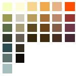

Mia Cain, J.S. Schönbauer and I animated the music video for Sea Power’s “Doppelgänger”. I was the one to create the color palette and the initial animatic we worked with in the final cut. The animation itself was done by all three of us. The video was shown at the Crossing Europe Festival, Local Artists category in 2023.
When sketching out the animatic and choosing the colors, I kept our central vision in mind: a theme of dissociation, isolation and paranoia. I wanted a dirty and unpolished feel to it. I went for a lot of dark, saturated tones and only added very few cleaner, brighter hues. We created a color script using the initial animatic, where the color was applied to the progression of tension.
My animation work can be seen throughout the video, although most of my work is contained in the last third of it.